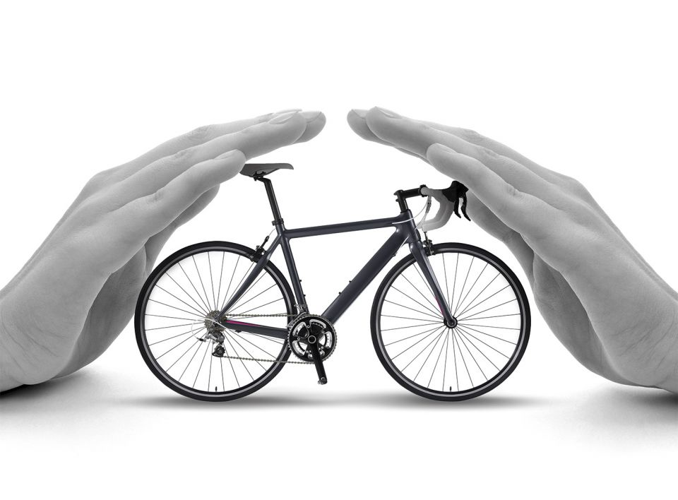

Na primeira etapa de nosso projeto, o cliente será direcionado à etapa “Cadastro”, no qual preencherá os dados pertinentes, como o nome, e-mail, telefone e CPF – os dados são digitados por meio do código criado por nós e armazenado no banco de dados. Em seguida, ele será direcionado para a página de escolha do tipo de seguro, onde escolherá o seguro de bikes, que pode ser adquirido independentemente do valor dela, e preencherá suas informações.
Caso esteja tudo certo com os dados do cliente, ele será encaminhado para a página que será realizado o envio da foto dos documentos pessoais e as fotos, vídeos e documentos da bike, onde essas fotos e vídeos devem obrigatoriamente ser tiradas no momento da vistoria: para isso, nosso sistema não permite fazer upload de arquivos já existentes. Nesse momento, ao invés da vistoria da bike ser realizada por um funcionário, ela será realizada em segundos por uma inteligência artificial com visão computorizada que identificará aspectos pré-estabelecidos nas fotos e vídeos.
Depois da etapa do envio dos arquivos, a inteligência artificial analisará e enviará ao cliente um e-mail mostrando o status de sua vistoria: se está em análise, com documentos faltando, aprovado ou reprovado – a partir desse e-mail, o cliente saberá os próximos passos a serem tomados e, se for aprovado, será direcionado a uma página onde assinará seu contrato e fará o pagamento.
Durante todo o processo da vistoria o cliente pode entrar em contato com o time de atendimento para solucionar possíveis dúvidas. Ao fim, o cliente poderá deixar seu feedback sobre a vistoria em questão de tempo, serviços, problemas, atendimento e resolução de dúvidas.
